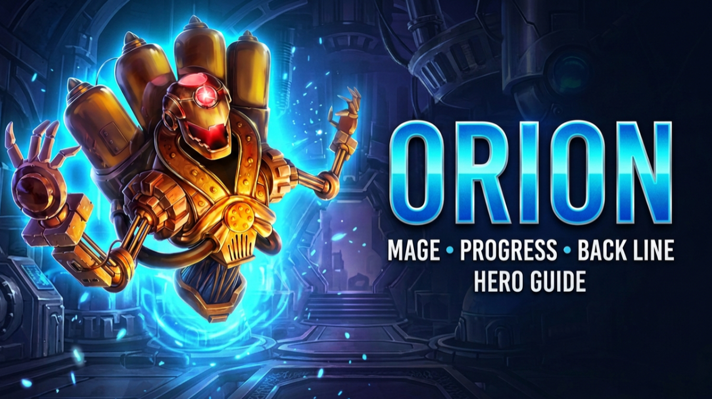

ORION
Orion is a long-standing Progress Mage built around speed, control and one of the most valuable team-wide offensive stats for magic compositions: Magic Penetration.
THE MAGIC PENETRATION ENGINE
Orion's Full Charge gives him additional Energy every time he attacks. That rapid Energy generation allows him to activate his Ultimate repeatedly, triggering his Weapon Artifact and providing Magic Penetration to the entire team again and again.
SKILLS
Total Destruction
Orion fires six magic missiles at the enemies with the highest Health, dealing Magic Damage with each hit. The damage scales with Orion's Magic Attack. This can become a strong finishing tool when the enemy team has already been weakened.
Magnetic Field
Orion creates an explosion in the enemy back line, dealing area Magic Damage and slowing affected enemies for four seconds. Against enemies above level 120, the chance of applying the Slow is reduced.
Antimatter Blast
Orion fires a magic missile at the nearest enemy, dealing Magic Damage and stunning the target for four seconds. Against enemies above level 120, the chance of applying the Stun is reduced.
Full Charge
Every time Orion attacks, he receives additional Energy. This is the mechanic that allows him to cycle his Ultimate rapidly and repeatedly activate his team-wide Magic Penetration Weapon Artifact.
SKINS
Highest priority. Magic Attack directly improves Orion's first three skills.
More survivability means more time to generate Energy, activate Ultimates and support the team.
Improves Orion's physical resistance against attackers.
Adds scaling to his first three skills while also contributing additional Magic Defense.
Lowest current priority because Orion already gains Magic Defense through his Intelligence development.
Future skins: another Magic Attack or Health skin would immediately become an interesting development option for Orion.
GLYPHS
Helps Orion bypass enemy Magic Defense and makes his damage more reliable, especially earlier in development.
Orion needs enough survivability to keep his Energy and Ultimate cycle running.
Improves the damage of Orion's first three skills.
Provides additional scaling while also improving Magic Defense.
Lower priority because Intelligence already contributes to this defensive stat.
Progression: take all five Glyphs to Level 40 first. Beyond Level 40, continue only if you are specifically pursuing Skill Class progression.
ARTIFACTS
WEAPON
Provides Magic Penetration to the entire team when Orion uses his first skill. Full Charge allows Orion to trigger this bonus frequently, making the Weapon the highest Artifact priority.
BOOK
Provides Magic Attack and Magic Penetration — exactly the offensive stats Orion wants for his personal damage.
RING
Provides Intelligence. Useful, but with less immediate impact than the Weapon's team bonus and the Book's direct offensive stats.
GIFT OF THE ELEMENTS
MAX IT OUT
The additional Health and Magic Attack are both valuable. Orion fights from the back line, but he is not untouchable. Keeping him alive gives him more opportunities to generate Energy, launch another Ultimate and activate another Magic Penetration bonus.
TALISMANS
Balanced Option
Provides additional scaling together with physical survivability. This Talisman is permanently available through the Eternal Frontier Shop for 700,000 Frontier Coins.
Offensive Option
Toughness provides additional defensive value while Magic Attack directly improves Orion's offensive abilities. This Talisman is obtainable through special events.
Which is better? Both are valuable. The better option can depend on the enemy composition and exactly what you need Orion to do in the battle.
ORION COUNTERS
SATORI
Orion's additional Energy generation can result in Fox Fire Marks being applied, turning Full Charge into a potential weakness.
RUFUS
Rakashi's Barrier can absorb Magic Damage and reduce the effectiveness of Orion's magical pressure.
CORNELIUS
Orion's high Intelligence makes him a dangerous target against Cornelius, whose damage can punish that stat.
LIAN
Orion's area damage can hit Lian and trigger her Charm, disrupting the speed and repeated activation cycle Orion depends on.
SOMNA
If Orion's attacks connect with Somna, she can transform him into a sheep and interrupt his offensive rhythm.
KEEP THE ENGINE RUNNING.
Orion's strength comes from the cycle: Energy, Ultimate, Magic Penetration, another attack, more Energy and another Ultimate. Build around that cycle and he can provide enormous value to a magic composition. Shut down his Energy generation, Magic Damage or exploit his high Intelligence, and the machine can collapse.